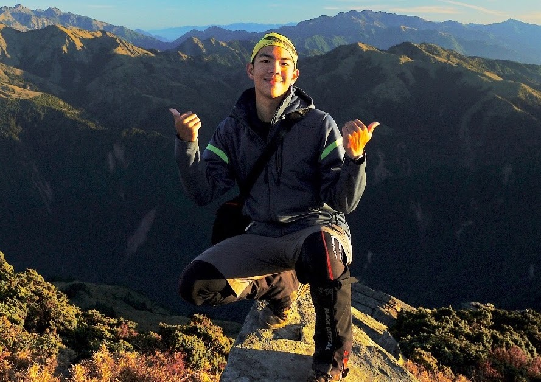
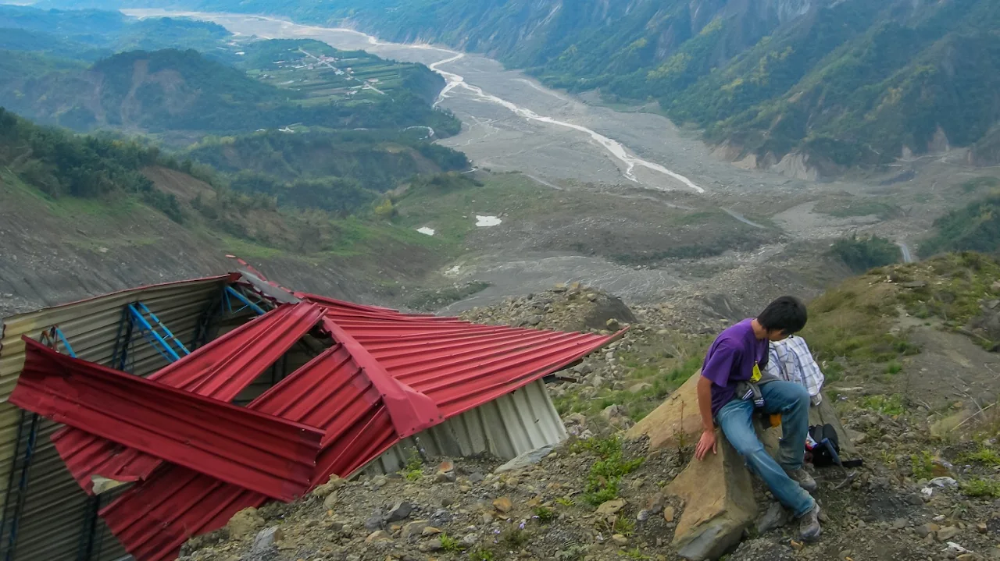
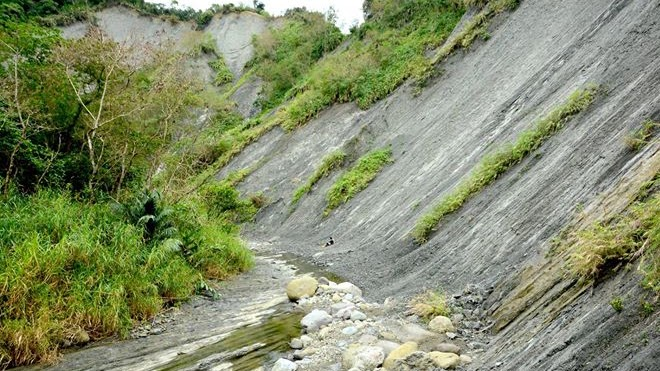
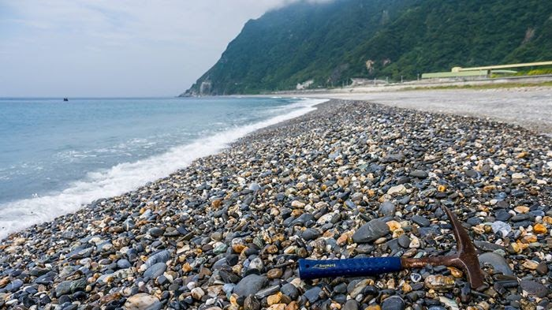
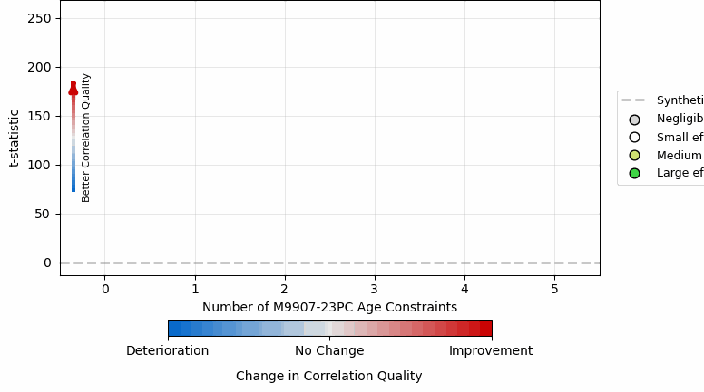

Subsurface logs and stratigraphic correlation
Pairwise correlation of cores and well logs, and basin-scale preparation of log data.
Research · Interests and projects

I study the intricate interplay between near-surface processes, which shape the Earth’s topography. These processes are tightly associated with tectonic activity, climate forces, and sediment redistribution over time and space. A significant amount of my time was dedicated to studying the genesis of the Coastal Range of eastern Taiwan, from a subsiding syn-orogenic deep-marine sedimentary basin to a rapidly rising and eroding mountain. The results provide a foundation for investigating the history of syn-orogenic basin evolution, crustal mixing, and ancient topographic growth associated with regional tectonic activities. I have also been involved in multiple projects in Taiwan, the Northwest Pacific of the United States, and New Zealand, investigating sediment-related river incision processes, the origin of landslides, and the interactions and feedbacks among topographic evolution, climate change, and tectonic activities.



Pairwise correlation of cores and well logs, and basin-scale preparation of log data.
Multiscale topographic complexity and valley width from digital elevation data.
Eastern Taiwan · Arc-continent collision
Studying the development of sedimentary basins, the origin of mélange, and inferred crustal deformation history at the active collisional suture zone of eastern Taiwan.
Bedrock rivers · Substrate and sediment
Studying how variabilities in substrate lithology and sediment govern the bedrock river channel slope and morphology in rapidly eroding and uplifting (>1 mm/yr) landslide-prone terrains.

Source-to-sink · Forward stratigraphic modeling
Linking geomorphic signals to stratigraphic archives by comparing source-to-sink numerical simulation and real-world source-mountain surface data and deep-time sedimentary basin rock records.
Landslides · Topographic evolution
Studying deep-seated landslides with regard to their spatio-temporal patterns, natural controls and triggers, and long-term effects on topographic evolution.
Stratigraphy · Automated correlation
Adapting a modern data-science approach to enhance objectivity and reproducibility in stratigraphic research, including new methods for automated correlation, facies classification, and sedimentological signal processing.

Coastal processes · Gravel beaches
Investigating sedimentologic and morphologic characteristics of gravel-rich beaches to understand coastal processes that cause shoreline changes and sediment mobilization. Details to be updated.